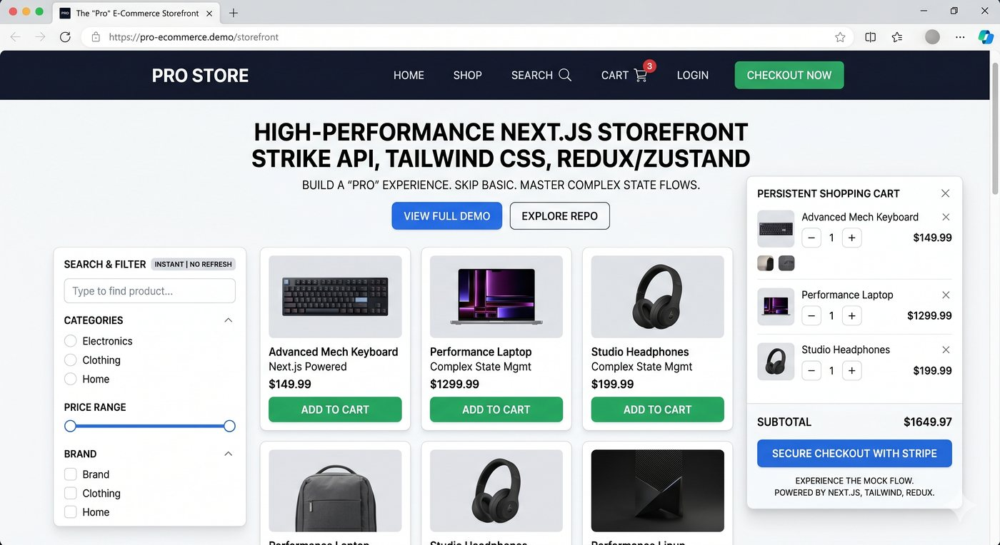

Portfolio case studies
Projects and UX Evidence
View GitHub Profile
Aura Hair Studio

Pro Storefront
E-commerce browsing and cart concept with visible user feedback.
Walkthrough evidence
Portfolio Walkthrough
A recorded walkthrough showing the portfolio interface and project presentation in use.